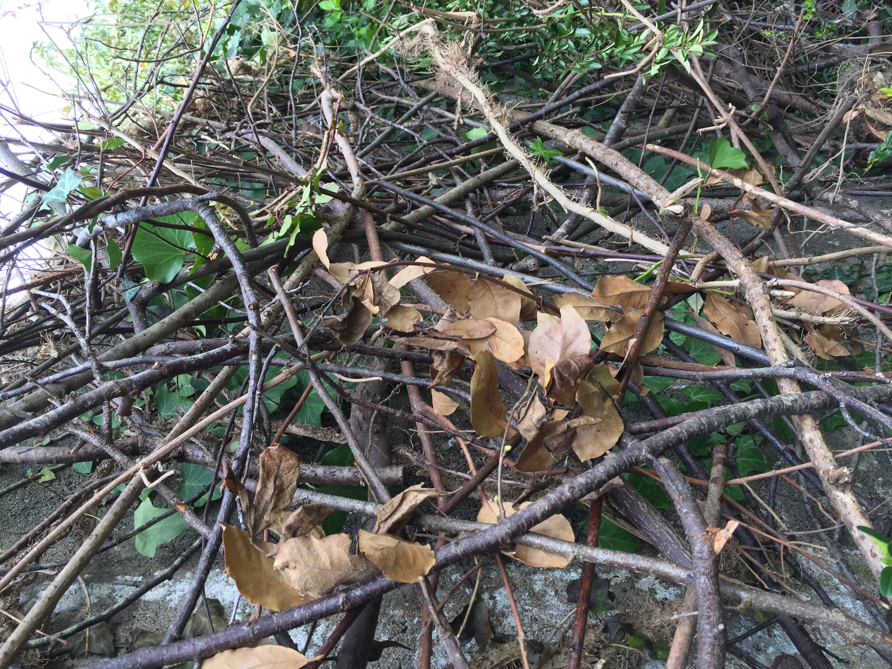

Here comes the sun
I spend too much of my life sitting alone in an office working on my conputer or looking at my smartphone. My regular dose of fresh air comes from my bike - I ride to work and back regularly - but I also enjoy getting out into the garden when I can. Trouble is, I dont really enjoy gardening! I do get a lot of satisfaction from pruning the trees and shrubs, especially if it involves some climbing :) and as a result we now have an enormous pile of branches, leaves and twigs in the bottom of the garden. I recently found a new activity which satisfies my creative side, starts to diminish the stack o' cuttings and hides some ugly concrete walls: building 'dead hedge' style walls and fences.
